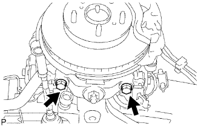

ĐÒN TREO DƯỚI PHÍA TRƯỚC > LẮP |
| 1. LẮP TẠM THỜI ĐÒN TREO DƯỚI TRƯỚC TRÁI |
 |
Lắp tạm đòn treo dưới bằng 2 cam điều chỉnh Camber, các cam điều chỉnh No.1 và No.2 và 2 đai ốc.
Gióng thẳèng các dấu ghi nhớ trên cam điều chỉnh Camber No.1 và cam điều chỉnh Camber No.2. Xiết chặt tạm thời các đai ốc.
|  |
Lắp miếng gá khớp cầu bằng đai ốc và một chốt chẻ mới.
Lắp miếng gá khớp cầu bằng 2 bu lông.
| 2. NỐI TẠM THỜI CỤM GIẢM CHẤN TRƯỚC VỚI LÒ XO TRỤ |
Lắp bộ giảm chấn với lò xo trụ bằng bu lông và lắp tạm thời đai ốc.
| 3. LẮP BÁNH TRƯỚC |
Lắp bánh trước.
| 4. ỔN ĐỊNH HỆ THỐNG TREO |
Hạ thấp xe.
Hãy nhún xe vài lần để ổn định hệ thống treo.
| 5. XIẾT CHẶT ĐÒN TREO DƯỚI TRƯỚC TRÁI |
Xiết chặt 2 đai ốc.
| 6. XIẾT CHẶT BỘ GIẢM CHẤN TRƯƠC CÓ LÒ XO TRỤ |
Cố định đai ốc và xiết chặt bu lông.
| 7. KIỂM TRA VÀ ĐIỀU CHỈNH GÓC ĐẶT BÁNH TRƯỚC |
Kiểm tra và điều chỉnh góc đặt bánh trước (Xem trang Kích chuột vào đây).